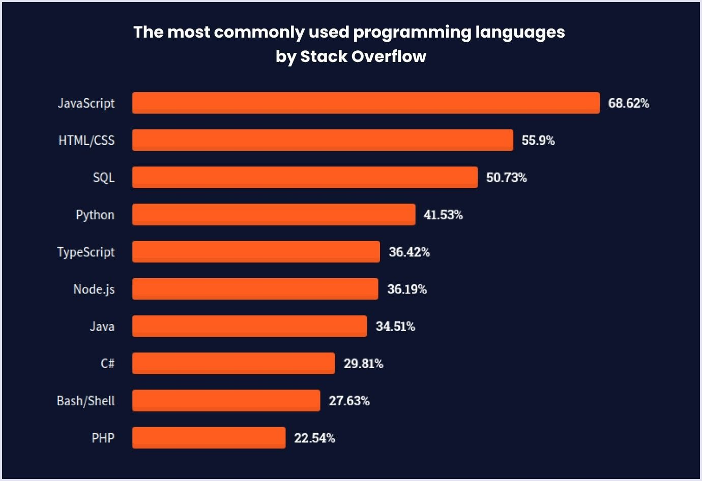
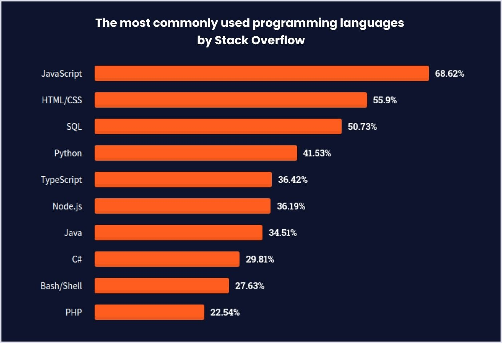

What are Programming Languages?
Programming languages are a type of language that can be used to write instructions for computers to follow as said by codecademy. There are many different programming languages that all communicate with computers. Some languages work more efficiently than others to accomplish certain tasks. A great example of this would be that if you were going to program a website, you would use HTML instead of a language like python since HTML is meant for web development. Another thing to note is that there are different levels of programming languages. High-level programming languages are languages such as Java or C++ that can be understood and interpreted by humans much easier than some other languages. The other languages that are very hard for humans to understand such as assembly, are what we call low-level programming languages due to these languages not being "human friendly". There are around 9,000 currently existing programming languages which just shows how many there are to choose from when learning. Finding the right language for a specific task that fits your understanding of programming is what makes coding so enjoyable. Check out some hyperlinks above for more info on a few specific programming languages!
 
